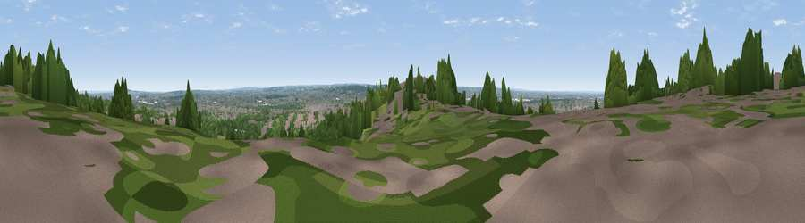

Viewpoint near Sydenham
#40999 in England · top 48% of its area beats it · near Sydenham · path 128 mWhere it is
The exact computed spot (TQ 33225 69575). Click the marker for map links.
Public access: the nearest public right of way is about 128 m away — the final stretch may cross private land. Computed from Natural England's CRoW access layer and OpenStreetMap rights of way — not the legal definitive map. Always verify locally.
The view, rendered

A 360° render of this exact spot computed from the terrain model, tree cover and land cover — summer colours, afternoon light, calibrated against photographs of famous viewpoints. Real trees, hedges and buildings will differ in detail.
The panorama
Grey silhouette: terrain skyline in each direction (720 bearings, Earth curvature and refraction included). Dashed green: skyline with trees (+15 m) and buildings (+8 m) as obstacles. Blue strip: how far the ground is visible on each bearing.
Where the view opens
Wedge length = distance to the farthest visible ground on that bearing (vegetation-aware). Rings at 10, 25 and 50 km.
What fills the view
50% woodland · 38% built-up · 11% grassland ·
Angular shares of the visible panorama (visual magnitude), not map area. Landscape diversity 0.44 (0–1 Shannon).
Key numbers
More beautiful places nearby
The staircase of upgrades: each row has a higher view potential than everything closer. Driving times are estimates from straight-line distance, calibrated against real road routing — check an actual route before setting out.
| Place | Direction | Drive | Score |
|---|---|---|---|
| Viewpoint near Sydenham | NNE · 4 km | ~8 min | 25.9 |
| Viewpoint near Sydenham | NNE · 4 km | ~10 min | 31.5 |
| Viewpoint near Catford | NNE · 5 km | ~11 min | 33.8 |
| Viewpoint near Croydon | S · 6 km | ~12 min | 34.6 |
| Viewpoint near Woldingham | SSE · 13 km | ~24 min | 40.1 |
| Viewpoint near Tatsfield | SSE · 16 km | ~28 min | 53.1 |
| Viewpoint near Chaldon | S · 16 km | ~28 min | 60.2 |
| Viewpoint near Limpsfield | SSE · 16 km | ~28 min | 64.0 |
51.40956, -0.08584 · source: screening · position refined by local search. Computed location — check access rights before visiting.